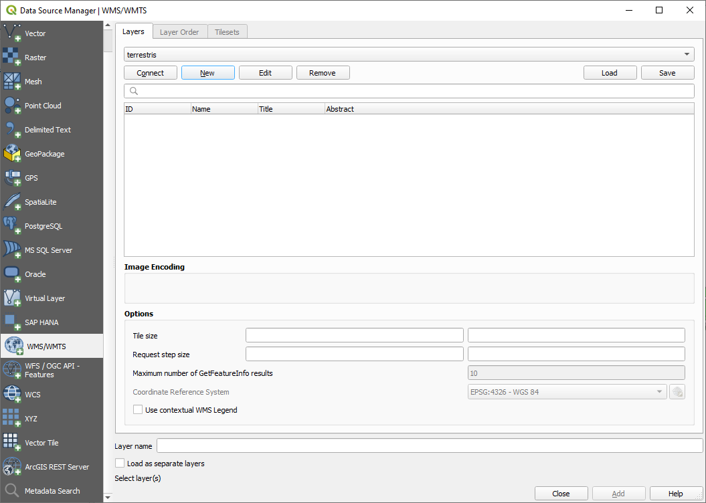

10.1. သင်ခန်းစာ - Web Mapping Services (Lesson: Web Mapping Services)
Web Mapping Service (WMS) တစ်ခုသည် remote server တစ်ခုပေါ်တွင်ရှိသော ဝန်ဆောင်မှုတစ်ခုဖြစ်ပါသည်။ ဝက်ဘ်ဆိုဒ် တစ်ခုနှင့်ဆင်တူပြီး server နှင့်အချိတ်အဆက်ရှိနေသမျှ ၎င်းကိုအသုံးပြုနိုင်မည်ဖြစ်သည်။ QGIS ကိုအသုံးပြု၍ သင်၏လက်ရှိ မြေပုံထဲသို့ WMS တစ်ခုကို တိုက်ရိုက်ထည့်သွင်းနိုင်ပါသည်။
Plugin များသင်ခန်းစာတွင် Google မှ raster image အသစ်တစ်ခုကို ထည့်သွင်းနိုင်သည်ကို သင်မှတ်မိပါလိမ့်မည်။ သို့သော် ၎င်းသည် တစ်ကြိမ်ထဲသာအပြီးဖြစ်ပြီး image ကိုဒေါင်းလုဒ်ပြုလုပ်ပြီးသည်နှင့် ပြောင်းလဲမှုမရှိတော့ပါ။ WMS သည် ၎င်းနှင့်မတူပဲ တိုက်ရိုက်ဝန်ဆောင်မှုတစ်ခုဖြစ်ပြီး မြေပုံပေါ်တွင် မြင်ကွင်းရွှေ့ခြင်း သို့မဟုတ် zoom အချုံ့/အချဲ့ပြုလုပ်ပါက အလိုအလျောက် refresh ဖြစ်သွားပါသည်။
ဤသင်ခန်းစာအတွက် ရည်မှန်းချက်- WMS တစ်ခုကို အသုံးပြုတတ်စေရန်နှင့် ၎င်း၏ အကန့်အသတ်များကို နားလည်စေရန်။
10.1.1. ★☆☆ လိုက်လုပ်ကြည့်ပါ - WMS layer တစ်ခုထည့်သွင်းခြင်း (Follow Along: Loading a WMS Layer)
ဤလေ့ကျင့်ခန်းအတွက် သင်တန်းအစတွင် သင်ဖန်တီးခဲ့သော အခြေခံမြေပုံကိုအသုံးပြုနိုင်သလို မြေပုံအသစ်တစ်ခုစတင်ပြီး ရှိပြီးသား layer များကိုလည်း ထည့်သွင်းနိုင်ပါသည်။ ဤဥပမာတွင် မြေပုံအသစ်တစ်ခုကို အသုံးပြုပြီး မူရင်း places ၊ landuse နှင့် protected_areas layer များကိုထည့်သွင်းကာ သင်္ကေတများချိန်ညှိခဲ့ပါသည်-

အဆိုပါ layer များကို မြေပုံအသစ်တစ်ခုထဲသို့ ထည့်သွင်းပါ၊ သို့မဟုတ် သင့်မူရင်းမြေပုံကိုအသုံးပြုပြီး အဆိုပါ layer များကိုသာ မြင်နိုင်အောင် ဖွင့်ထားပါ။
WMS layer အား စတင်မထည့်သွင်းမီ “on the fly” projection ( tab ၊ No CRS (or unknown/non-Earth projection) ကိုအမှန်ခြစ်ပါ) အား ပိတ်ထားပါ။ ထိုသို့လုပ်ခြင်းသည် layer များကို မှန်ကန်စွာ ထပ်နေစေမည်တော့မဟုတ်ပါ၊ သို့သော် စိတ်ပူရန်မလိုပါ- နောက်ပိုင်းတွင် ပြန်လည်ပြင်ဆင်မည်ဖြစ်ပါသည်။
WMS layer များကို ထည့်သွင်းရန်
 ခလုတ်ကိုနှိပ်ပြီး Data Source Manager dialog ကိုဖွင့်ပါ၊
ခလုတ်ကိုနှိပ်ပြီး Data Source Manager dialog ကိုဖွင့်ပါ၊  WMS/WMTS tab ကိုဖွင့်ပေးပါ။
WMS/WMTS tab ကိုဖွင့်ပေးပါ။
သင်တန်း၏အစတွင် SpatiaLite သို့မဟုတ် GeoPackage database တစ်ခုနှင့်ချိတ်ဆက်နည်းကို သတိရပါ။ landuse ၊ buildings နှင့် roads layer များကို database တစ်ခုထဲတွင် သိမ်းဆည်းထားပါသည်။ အဆိုပါ layer များကိုအသုံးပြုရန် database နှင့်ဦးစွာ ချိတ်ဆက်ရန် လိုအပ်ပါသည်။ WMS တစ်ခုကိုအသုံးပြုခြင်းသည်လည်း layer များ remote server တစ်ခုထဲတွင် ရှိနေသည်မှလွဲ၍ ထိုနည်းတူပင်ဖြစ်သည်။
WMS တစ်ခုနှင့် ချိတ်ဆက်မှုအသစ်တစ်ခုဖန်တီးရန် New ခလုတ်ကိုနှိပ်ပါ။
ဆက်လက်လုပ်ဆောင်ရန်အတွက် WMS address တစ်ခုလိုအပ်ပါသည်။ အင်တာနက်တွင် အခမဲ့ WMS server များစွာ ရှိပါသည်။ ၎င်းတို့ထဲမှ တစ်ခုသည် terrestris ဖြစ်ပြီး OpenStreetMap dataset များကိုအသုံးပြုထားပါသည်။
အဆိုပါ WMS ကိုအသုံးပြုရန် လက်ရှိ dialog ထဲတွင် ၎င်းကို အောက်ပါအတိုင်းသတ်မှတ်ပေးပါ-

Name field တွင်
terrestrisဖြစ်သင့်ပါသည်။URL field တွင်
https://ows.terrestris.de/osm/serviceဖြစ်သင့်ပါသည်။
OK ကိုနှိပ်ပါ။ WMS server အသစ် ဝင်လာပါလိမ့်မည်-
 Connect ကိုနှိပ်ပါ။ စာရင်းထဲတွင် အောက်ပါ entry အသစ်များထည့်သွင်းပေးသွားမည်ဖြစ်သည်-

အဆိုပါ layer များအားလုံးသည် ဤ WMS server တွင်ရှိသော layer များဖြစ်သည်။
OSM-WMS layer ပေါ်တွင် click တစ်ချက်နှိပ်ပါ။ ထိုအခါ အသုံးပြုထားသော default Coordinate Reference System ကိုပြသလိမ့်မည်ဖြစ်ပြီး dataset မှအသုံးပြုနိုင်သော CRS အရေအတွက်ကို ပြသပေးပါလိမ့်မည်-

ကျွန်ုပ်တို့မြေပုံအတွက်
EPSG:4326 - WGS 84ကိုအသုံးပြုမည်မဟုတ်သည့်အတွက် အခြားကိုက်ညီမည့် CRS တစ်ခုကို ရှာဖွေကြည့်ပါမည်။ Select CRS ခလုတ်ကိုနှိပ်ပါ။ Data နှင့်အတူပါလာသော CRS များအားလုံးကို ပြသပေးသည့် Coordinate Reference System Selector dialog တစ်ခုကိုတွေ့ရပါလိမ့်မည်။
Select CRS ခလုတ်ကိုနှိပ်ပါ။ Data နှင့်အတူပါလာသော CRS များအားလုံးကို ပြသပေးသည့် Coordinate Reference System Selector dialog တစ်ခုကိုတွေ့ရပါလိမ့်မည်။Projected CRS တစ်ခုကို လိုချင်သည့်အတွက်
EPSG:3857ဖြင့် WGS 84 / Pseudo-Mercator ကိုရွေးချယ်ပါမည်။ အပေါ်ဘက်ရှိ Filter widget ကိုလည်း အသုံးပြုနိုင်ပါသည်။
Filter widget ကိုလည်း အသုံးပြုနိုင်ပါသည်။
OK ကိုနှိပ်ပါ။ Coordinate Reference System ပြောင်းသွားပါလိမ့်မည်။
Layer name (Default သည် OpenStreetMap WMS - by terrestris ဖြစ်ပါသည်) ကိုအသုံးပြုပြီး project ထဲသို့ layer ကိုထည့်သွင်းရန် Add ကိုနှိပ်ပါ။
Data Source Manager dialog ကိုပိတ်ပါ။
Layers panel ထဲတွင် ၎င်း WMS layer ကို အောက်ဆုံးသို့ ဖိဆွဲ၍ရွှေ့ပါ။
Layer များကို တစ်ကမ္ဘာလုံးအတိုင်းအတာ မြင်ရနိုင်စေရန် zoom ချုံ့ကြည့်ပါ။ Layer များသည် တည်နေရာမှန်မှန်ကန်ကန် ရှိမနေသည်ကို မြင်ရပါလိမ့်မည် (အာဖရိက၏ အနောက်ဘက် အနား)။ ထိုသို့ဖြစ်ရသည်မှာ “on the fly” projection ကိုပိတ်ထားသောကြောင့်ဖြစ်သည်။
Projection ထပ်မံ၍ ပြောင်းကြည့်ပါမည်၊ OpenStreetMap WMS layer ၏ projection ဖြစ်သော WGS 84 / Pseudo Mercator အတိုင်းအတူတူအသုံးပြုပါမည်။
tab ကိုဖွင့်ပါ
No CRS (or unknown/non-Earth projection) ကိုအမှန်ခြစ်ဖြုတ်ပါ
စာရင်းထဲမှ WGS 84 / Pseudo Mercator ကိုရွေးပါ။

OK ကိုနှိပ်ပါ။
Layers panel ထဲရှိ မိမိ၏ကိုယ်ပိုင် layer တစ်ခုပေါ်တွင် right-click နှိပ်ပြီး Zoom to layer(s) ကိုနှိပ်ပါ။ Swellendam ဧရိယာကို မြင်တွေ့ရမည်ဖြစ်သည်-
{kind=link}
{kind=link}
WMS layer ၏ လမ်းများနှင့် မိမိ၏ကိုယ်ပိုင် လမ်း layer သည် ထပ်သွားသည်ကို တွေ့ရပါမည်။
WMS ၏သဘောသဘာဝနှင့် အကန့်အသတ်များ (The nature and limitations of WMS)
ဤ WMS layer ထဲတွင် feature များစွာ ပါရှိသည်ကို သတိပြုမိပါလိမ့်မည်။ လမ်းများ၊ မြစ်များ၊ သဘာဝကာကွယ်တောများ၊ အစရှိသဖြင့် ပါရှိနေပါသည်။ ၎င်းသည် vector များဖြင့် ဖွဲ့စည်းထားသော်လည်း raster တစ်ခုဖြစ်ပုံရပါသည်၊ သို့သော် ၎င်း၏ သင်္ကေတများကို မပြောင်းလဲနိုင်ပါ။ ဘာကြောင့်ပါလဲ။
ဤအရာသည် WMS တစ်ခု၏ အလုပ်လုပ်ပုံဖြစ်ပါသည်- ၎င်းသည် image တစ်ခုအနေဖြင့်သာ ရရှိသော မြေပုံတစ်ခုဖြစ်ပြီး စာရွက်ပေါ်ရှိ ပုံမှန်မြေပုံတစ်ခုနှင့်ဆင်တူပါသည်။ သင့်တွင် vector layer များရှိသောအခါ QGIS သည် မြေပုံတစ်ခုအဖြစ် ပုံဖော်ပြသပေးပါသည်၊ သို့သော် WMS အသုံးပြုခြင်းတွင် အဆိုပါ vector layer များသည် WMS server ပေါ်တွင် ရှိပြီး ၎င်းတို့ကို မြေပုံတစ်ခုအဖြစ်ပုံဖော်ပြသပြီး ထိုမြေပုံကို သင့်ဆီသို့ image တစ်ခုအနေဖြင့် ပြန်ပို့ပေးခြင်းဖြစ်သည်။ QGIS သည် ထို image ကိုပြသပေးနိုင်သော်လည်း ၎င်း၏ သင်္ကေတများကိုမပြောင်းလဲနိုင်ပါ၊ ထိုသို့ဖြစ်ရခြင်းမှာ အားလုံးကို server ပေါ်တွင် ကိုင်တွယ်လုပ်ဆောင်သောကြောင့်ဖြစ်သည်။
သင်္ကေတနှင့်ပတ်သက်ပြီး စိတ်ပူရန်မလိုအပ်သည့်အတွက် အကျိုးများစွာတော့ရှိပါသည်။ ထိုအတွက် လုပ်ဆောင်ထားပြီးဖြစ်ကာ ကောင်းမွန်စွာဒီဇိုင်းလုပ်ထားသော WMS တစ်ခုခုကို ရှာဖွေကြည့်လျှင်ပိုကောင်းမည်ဖြစ်သည်။
တစ်နည်းအားဖြင့်ဆိုရလျှင် သင့်အနေဖြင့် သင်္ကေတကို မနှစ်သက်လျှင် ပြောင်းလဲ၍မရနိုင်ပါ၊ WMS server ပေါ်တွင် ပြောင်းလဲမှုပြုလုပ်ပါက သင့်မြေပုံတွင်လည်း ပြောင်းလဲသွားမည်ဖြစ်ပါသည်။ ထိုအတွက်ကြောင့် တစ်ခါတရံတွင် WMS အစား Web Feature Service (WFS) ကိုအသုံးပြုလိုခြင်းဖြစ်သည်၊ WFS သည် WMS-style မြေပုံ၏အစိတ်အပိုင်းအဖြစ်မဟုတ်ပဲ vector layer များကို သီးခြားပေးထားပါသည်။
ထိုအကြောင်းကို နောက်သင်ခန်းစာတွင် လေ့လာရမည်ဖြစ်သည်။ ဦးစွာ နောက်ထပ် WMS layer ကိုထည့်သွင်းကြည့်ပါမည်။
10.1.2. ★☆☆ မိမိကိုယ်တိုင်ကြိုးစားကြည့်ပါ - (Try Yourself:)
https://maps.eatlas.org.au/maps/wmsURL မှeAtlasWMS server ကိုထည့်သွင်းပါ။World: Hillshading layer ကိုမြေပုံထဲသို့ ထည့်သွင်းပါ။
မြန်ဆန်စေရန်အတွက် Encoding တွင် JPEG ဟုသတ်မှတ်ပြီး Tile size တွင်
200by200ထားပါ၊သင့်မြေပုံသည် အောက်ပါပုံစံအတိုင်းဖြစ်သင့်ပါသည် (layer များကို order ပြန်စီပြီး အလင်းဖောက်နှုန်းအချို့ သုံးပေးရန် လိုအပ်နိုင်ပါသည်)-

အဖြေ
Data Source Manager ထဲရှိ WMS / WMTS tab ထဲတွင် ချိတ်ဆက်မှုအသစ်တစ်ခုဖန်တီးပါ။
- စာသား box ကိုအသုံးပြုပြီး layer များစာရင်းကို filter လုပ်ကာ သက်ဆိုင်ရာ layer ကိုရွေးချယ်ပါ
၎င်း၏ CRS ကို မြေပုံ၏အခြား layer များအတိုင်း EPSG:3857 - WGS 84 / Pseudo Mercator အဖြစ်ပြောင်းလဲရန် မမေ့ပါနှင့်။

Layer ကိုထည့်သွင်းပြီးနောက် ၎င်း၏ Opacity တန်ဖိုးကို ပြင်ဆင်နိုင်ပါသည် (Transparency properties tab အောက်တွင်)
10.1.3. ★★★ မိမိကိုယ်တိုင်ကြိုးစားကြည့်ပါ - (Try Yourself:)
WMS အသုံးပြုရခြင်း၏ အခက်အခဲတစ်စိတ်တစ်ပိုင်းသည် ကောင်းမွန်သော (အခမဲ့ဖြစ်သော) server တစ်ခုရှာဖွေရခြင်းဖြစ်သည်။
directory.spatineo.com (သို့မဟုတ် အွန်လိုင်းတစ်နေရာရာမှ) မှ WMS အသစ်တစ်ခုကို ရှာပါ။ အခကြေးငွေပေးရခြင်း သို့မဟုတ် တားမြစ်ချက်များ မရှိစေရပါ၊ Swellendam ဧရိယာကို လွှမ်းခြုံရမည်ဖြစ်သည်။
မှတ်ထားရမည်မှာ WMS တစ်ခုကိုအသုံးပြုရန် ၎င်း၏ URL သာလိုအပ်ပါသည် (လိုအပ်လျှင် ဖော်ပြချက်အချို့ ထည့်ပေးနိုင်ပါသည်)။
အဖြေ
Spatineo သည် OGC data ရှာဖွေပေးနိုင်သော နေရာများထဲမှ တစ်ခုဖြစ်ပါသည်။ ရလာဒ်များရမရ ကြည့်ရှုရန် စာသားဧရိယာထဲတွင် အမည်၊ Keyword၊ စိတ်ဝင်စားသည့်တည်နေရာ ရိုက်ထည့်ကြည့်ပါ။ ဤသင်ခန်းစာအတွက် WMS သာပါဝင်သော ရလာဒ်များကိုသာ filter လုပ်လိုပါသည်။
WMS server များစွာသည် အမြဲတမ်းအသုံးမပြုနိုင်သည်ကို သတိထားမိပါလိမ့်မည်။ တစ်ခါတရံတွင် ယာယီသာဖြစ်ပြီး တစ်ခါတရံတွင် အမြဲတမ်းဖြစ်ပါသည်။ မှတ်တမ်းရေးသားနေချိန်တွင် အလုပ်လုပ်နေသော WMS server ဥပမာတစ်ခုပြောရလျှင် MapServer Demonstration Server WMS ဖြစ်ပြီး https://demo.mapserver.org/cgi-bin/wms?SERVICE=WMS&VERSION=1.3.0&REQUEST=GetCapabilities URL တွင်ရှိပါသည်။ ၎င်းသည် အခကြေးငွေပေးရန်မလိုအပ်သလို သုံးစွဲခွင့်ကန့်သတ်ချက်များလည်း မရှိပါ၊ တစ်ကမ္ဘာလုံးအတွက် အသုံးပြုနိုင်ပါသည်။ ထို့ကြောင့် ၎င်းသည် လိုအပ်ချက်များနှင့်ကိုက်ညီပြီး သုံးစွဲရ အဆင်ပြေပါသည်။ စိတ်ထဲမှတ်သားထားရမည်မှာ ၎င်း WMS သည် ဥပမာတစ်ခုသာဖြစ်ပြီး အခြားရွေးချယ်နိုင်သည့် WMS server များစွာရှိပါသေးသည်။
10.1.4. ★★★ မိမိကိုယ်တိုင်ကြိုးစားကြည့်ပါ - (Try Yourself:)
MapServer Demonstration Server မှ bluemarble layer ကိုထည့်သွင်းပါ။ ၎င်းသည် ကျွန်ုပ်တို့ study area အတွက် သင့်လျော်သော dataset တစ်ခုဖြစ်ပါသလား?
အဖြေ
ပုံဖော်ပြသရန်မလိုအပ်သော အခြား WMS layer များအားလုံးကို ဖျောက်ထားပါ။
အထက်တွင်ပြသထားသည့်နည်းအတိုင်း server အသစ်ကိုထည့်သွင်းပြီး ထို server ၌ရှိသော သင့်လျော်သော layer ကိုထည့်သွင်းပါ-

Swellendam ဧရိယာသို့ zomm ချဲ့ကြည့်လျှင် ဤ dataset သည် resolution နိမ့်နေသည်ကို သင်သတိထားမိပါလိမ့်မည်-

ထို့ကြောင့် ဤ data ကို လက်ရှိမြေပုံအတွက် အသုံးမပြုလျှင်ပိုကောင်းပါသည်။ Blue Marble data သည် ကမ္ဘာအဆင့် စကေးများနှင့် နိုင်ငံအဆင့် စကေးများတွင်သာ ပိုမိုသင့်တော်ပါသည်။
10.1.5. နိဂုံးချုပ် (In Conclusion)
WMS တစ်ခုကိုအသုံးပြုခြင်းဖြင့် သင့် လက်ရှိမြေပုံ data အတွက် နောက်ခံအနေဖြင့် ပြောင်းလဲမှုမရှိသောမြေပုံများ ထည့်သွင်းနိုင်မည်ဖြစ်ပါသည်။
10.1.6. နောက်ထပ်ဖတ်ရှုရမည်များ (Further Reading)
10.1.7. နောက်ထပ်ဘာအကြောင်းအရာလဲ (What’s Next?)
ယခုဆိုလျှင် နောက်ခံအနေဖြင့် ပြောင်းလဲမှုမရှိသောမြေပုံတစ်ခုထည့်သွင်းပြီးဖြစ်ပါသည်၊ feature များကိုလည်း ထည့်သွင်းနိုင်ပါသေးသည် (အခြား vector layer များထည့်သွင်းသကဲ့သို့)။ Web Feature Service (WFS) တစ်ခုအသုံးပြုပြီး Remote server များမှ feature များထည့်သွင်းနိုင်ပါသည်။ ထိုအကြောင်းကို နောက်လာမည့် သင်ခန်းစာတွင် သင်ကြားပေးမည်ဖြစ်ပါသည်။